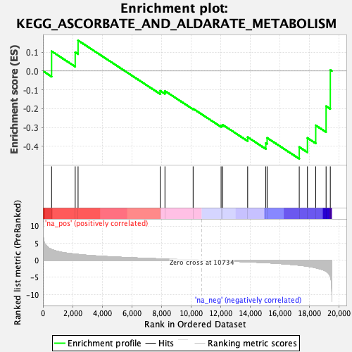

| | | Dataset | PFS |
| Phenotype | NoPhenotypeAvailable |
| Upregulated in class | na_neg |
| GeneSet | KEGG_ASCORBATE_AND_ALDARATE_METABOLISM |
| Enrichment Score (ES) | -0.46572623 |
| Normalized Enrichment Score (NES) | -1.290607 |
| Nominal p-value | 0.1369863 |
| FDR q-value | 0.4617308 |
| FWER p-Value | 0.998 |
Table: GSEA Results Summary

Fig 1: Enrichment plot: KEGG_ASCORBATE_AND_ALDARATE_METABOLISM
Profile of the Running ES Score & Positions of GeneSet Members on the Rank Ordered List
Fig 2: KEGG_ASCORBATE_AND_ALDARATE_METABOLISM: Random ES distribution
Gene set null distribution of ES for KEGG_ASCORBATE_AND_ALDARATE_METABOLISM